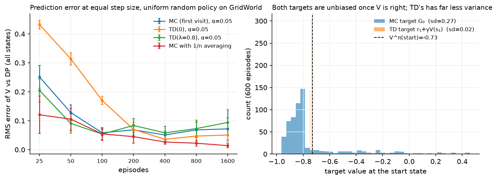
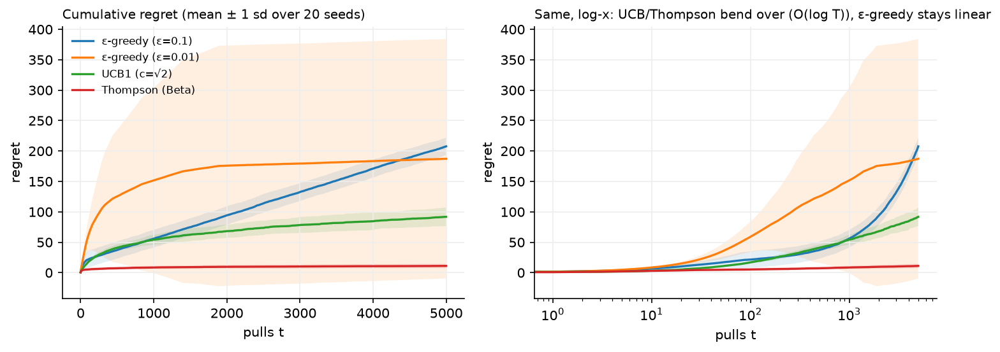

Classical RL algorithms¶
Why this matters at staff level. This is the chapter that decides whether you can answer RL questions outside a frontier lab. Bandits are the most widely deployed form of RL in industry, and interviewers at ranking and ads companies ask about them directly. The tabular algorithms (MC, TD, SARSA, Q-learning) are where the on-policy versus off-policy distinction becomes concrete, and every deep RL method in chapters 3 and 4 is one of them with a neural network bolted on. Strong signal: deriving the UCB bonus from Hoeffding instead of quoting it, and giving the variance argument for the bias/variance trade between TD and Monte Carlo.
TL;DR, the interview card¶
- A bandit is a one-step MDP: no state transitions, so no Bellman backup, only exploration versus exploitation. Regret after \(T\) pulls is \(T\mu^* - \sum_t \mu_{a_t}\).
- \(\varepsilon\)-greedy has linear regret (\(\varepsilon\) fraction of pulls are wasted forever). UCB and Thompson sampling have \(O(\log T)\) regret.
- UCB bonus: Hoeffding gives \(\Pr(\hat\mu_k - \mu_k \ge u) \le e^{-2n_k u^2}\); set the bound to \(t^{-4}\) and solve to get \(u = \sqrt{2\ln t / n_k}\). That square root is the whole algorithm.
- Thompson sampling: keep a \(\mathrm{Beta}(\alpha_k,\beta_k)\) posterior per arm, sample one \(\theta_k\) from each, pull the argmax. Arm \(k\) is pulled with the posterior probability that it is best.
- Monte Carlo target \(G_t\) is unbiased with variance that grows with the horizon. TD(0) target \(r + \gamma V(s')\) is biased while \(V\) is wrong, with variance from one transition. \(n\)-step and TD(\(\lambda\)) interpolate.
- TD error: \(\delta_t = r_{t+1} + \gamma V(s_{t+1}) - V(s_t)\). Every algorithm in this part is "move something in the direction of a \(\delta\)".
- SARSA target uses the action you actually took next (\(r + \gamma Q(s',a')\)), so it is on-policy and learns the value of your exploratory behaviour. Q-learning uses \(\max_{a'}Q(s',a')\), so it is off-policy and learns \(Q^*\) regardless of behaviour.
- Convergence (tabular) needs Robbins-Monro steps, \(\sum_t \alpha_t = \infty\), \(\sum_t \alpha_t^2 < \infty\), plus infinite visits to every state-action pair.
- \(\E[\max_a \hat Q(a)] \ge \max_a \E[\hat Q(a)]\) by Jensen, so the max of noisy estimates is biased upward. Double Q-learning decouples selection from evaluation and removes it.
1. Intuition first¶
Two problems, in order of increasing difficulty.
Problem one: four slot machines. Machine payouts are Bernoulli with unknown means \(0.1, 0.5, 0.6, 0.9\). You get 5000 pulls. Every pull spent on a bad machine is money lost; every pull spent on the best machine teaches you nothing new. You do not know which is which. There is no state: pulling machine 3 does not change what happens next.
Problem two: the gridworld from chapter 1, with the tensors taken away. You can still move, still see which cell you land in, still collect rewards. You do not have \(P\) or \(R\). You cannot do a Bellman backup because the backup requires a sum over \(s'\) weighted by probabilities you do not know. All you have is experience: \(s_0, a_0, r_1, s_1, a_1, r_2, \ldots\)
Problem one is answered by bandit algorithms. Problem two has exactly two answers, and every method in RL descends from one of them:
- Wait and see. Play the episode to the end, look at the actual return \(G_t\), and move \(V(s_t)\) toward it. That is Monte Carlo. The estimate is unbiased because \(G_t\) really is a sample from the distribution whose mean is \(V(s_t)\). It has high variance because it contains every random reward and transition between \(t\) and the end.
- Guess and correct. Take one step, see \(r_{t+1}\) and \(s_{t+1}\), and move \(V(s_t)\) toward \(r_{t+1} + \gamma V(s_{t+1})\), using your own current estimate for the rest. That is TD. It is biased while \(V\) is wrong, and it has much lower variance because only one transition is random. Using your current estimate to update your current estimate is called bootstrapping, and it is the single most consequential idea in RL: it is what makes learning fast and it is what makes deep RL unstable (chapter 3).

The right-hand panel is the variance claim, measured. Both targets have mean \(V^\pi(\text{start}) = -0.73\), so neither is systematically wrong once \(V\) is correct. The MC target is spread across every possible episode outcome with a standard deviation of 0.27; the TD target takes one reward plus a number already in the table, and its standard deviation is 0.02, about 13 times smaller.
The left panel is less tidy than the usual story, and the details are worth having. All three constant-step methods use \(\alpha = 0.05\), so the comparison is about the target rather than the schedule. TD(0) is the worst method for the first hundred episodes: information about the goal reaches a state one step per visit, so a 16-state grid takes many episodes to propagate it, while one MC episode informs every state it touched. TD(0) overtakes constant-step MC around 400 episodes and keeps improving, which is the variance advantage showing up once propagation is no longer the bottleneck. The constant-step curves then flatten and drift, because a fixed \(\alpha\) tracks rather than converges; MC with \(1/n\) averaging keeps descending. Bootstrapping buys variance and costs propagation speed, and which one dominates depends on the horizon and on how long you train.
2. The math¶
2.1 Bandits: the problem¶
\(K\) arms, arm \(k\) has unknown mean reward \(\mu_k\). At each step \(t\) you pick \(a_t\) and see \(r_t\) with \(\E[r_t] = \mu_{a_t}\). Write \(\mu^* = \max_k \mu_k\) and \(\Delta_k = \mu^* - \mu_k\) for the gap of arm \(k\). The quantity to minimise is the expected regret
where \(n_k(T)\) is the number of pulls of arm \(k\). The second form is the useful one: regret is the sum over arms of (how bad the arm is) times (how often you pulled it). An algorithm is good if it pulls bad arms only \(O(\log T)\) times.
\(\varepsilon\)-greedy pulls a uniformly random arm with probability \(\varepsilon\) forever, so \(\E[n_k(T)] \ge \varepsilon T/K\) for every arm and regret grows linearly at rate \(\varepsilon \bar\Delta\). Decaying \(\varepsilon_t \propto 1/t\) fixes the asymptotics, and is what people usually mean when they say \(\varepsilon\)-greedy works fine.
2.2 Deriving UCB from Hoeffding¶
The principle is optimism in the face of uncertainty: score each arm by the highest value its data cannot rule out, then act greedily on that score. To turn that into a formula you need a confidence interval, and Hoeffding's inequality gives one.
Hoeffding's inequality. If \(X_1,\ldots,X_n\) are independent with \(X_i \in [0,1]\) and \(\hat\mu = \frac{1}{n}\sum_i X_i\), then for any \(u > 0\)
Apply it to arm \(k\) after \(n_k\) pulls with empirical mean \(\hat\mu_k\). We want a bonus \(u_k\) such that \(\mu_k \le \hat\mu_k + u_k\) with high probability. Set the failure probability to \(\delta\):
Now choose \(\delta\). We need the bound to hold for all arms and all times, and we want the total probability of ever being wrong to be small, so \(\delta\) must shrink with \(t\). Taking \(\delta = t^{-4}\) (the standard choice, which makes the union bound over \(t\) and \(k\) converge) gives
and the algorithm is
which is UCB1 (Auer, Cesa-Bianchi and Fischer, 2002). Read the two terms: \(\hat\mu_k\) is exploitation, the bonus is exploration, and the bonus shrinks as \(1/\sqrt{n_k}\) (you become confident) and grows as \(\sqrt{\ln t}\) (arms you have ignored become worth rechecking as time passes). No randomness is involved anywhere.
Why this gives logarithmic regret, in one paragraph. A suboptimal arm \(k\) can only be pulled when its upper bound exceeds the optimal arm's upper bound. If the confidence intervals hold, that requires \(\hat\mu_k + u_k \ge \mu^*\), which, since \(\hat\mu_k \approx \mu_k\), requires \(2u_k \gtrsim \Delta_k\), i.e. \(n_k \lesssim 8\ln t/\Delta_k^2\). Summing over arms,
so arms that are nearly as good as the best (small \(\Delta_k\)) get pulled a lot, which costs little per pull. This matches the Lai-Robbins lower bound up to constants: no algorithm can do better than \(\Omega(\log T)\).
2.3 Thompson sampling with Beta posteriors¶
Thompson sampling is Bayesian and, in the Bernoulli case, two lines of code. Put a \(\mathrm{Beta}(1,1)\) prior (uniform on \([0,1]\)) on each arm's success probability. Beta is conjugate to Bernoulli (see Part I, Probability), so after \(S_k\) successes and \(F_k\) failures the posterior is
At each step, draw one sample \(\tilde\theta_k \sim \mathrm{Beta}(1+S_k, 1+F_k)\) per arm and pull \(\argmax_k \tilde\theta_k\). The update after seeing \(r \in \{0,1\}\) is \(\alpha_k \mathrel{+}= r\), \(\beta_k \mathrel{+}= 1-r\).
The property worth stating in an interview is probability matching: arm \(k\) is selected with exactly the posterior probability that arm \(k\) is optimal,
Posterior width is what drives exploration here, and there is no bonus constant to tune. A wide posterior sometimes samples high and the arm gets tried; as data accumulates the posterior narrows and sampling concentrates on the best arm. Thompson sampling also has \(O(\log T)\) regret, and in practice it usually beats UCB on Bernoulli problems, as the figure below shows.

On the log-\(x\) axis, a \(\log T\) regret is a straight line and a linear regret curves upward, which is what separates the green and red curves from the blue one. Over 20 seeds at \(T = 5000\) the totals are: \(\varepsilon\)-greedy at \(\varepsilon=0.1\), \(208 \pm 14\); \(\varepsilon\)-greedy at \(\varepsilon=0.01\), \(187 \pm 197\); UCB1, \(92 \pm 15\); Thompson, \(11 \pm 4\). The second row is the interesting one: its mean is fine and its standard deviation is larger than its mean, because with so little exploration the algorithm sometimes locks onto a suboptimal arm and never recovers. Averages hide that; plot the spread.
2.4 Contextual bandits¶
Almost nothing in production is a plain bandit. You see a context \(x_t \in \R^d\) (user features, device, time of day) before choosing, and the reward depends on both: \(\E[r_t \mid x_t, a_t] = f(x_t, a_t)\). This is still a one-step problem (your choice does not change the next context), but the estimation problem is now a regression per arm.
LinUCB (Li, Chu, Langford and Schapire, WWW 2010) assumes a linear reward \(f(x,k) = x^\top\theta_k\) and applies the same optimism principle to the ridge regression confidence ellipsoid:
The bonus \(\sqrt{x^\top A_k^{-1}x}\) is the standard deviation of the predicted reward along the direction \(x\): it is large when you have seen few contexts resembling \(x\) for that arm. The same structure appears with a neural network in place of the linear model, where the usual approximations to the bonus are dropout, an ensemble, or a last-layer Bayesian head.
Three facts about contextual bandits in production that interviewers look for:
- Logged data is biased by the logging policy. If your old policy rarely showed article 7, you have almost no data on it, and naive supervised training on logs will inherit that blind spot. The fix is to log propensities \(\pi_{\text{old}}(a\mid x)\) at serving time and use inverse propensity weighting for evaluation.
- Offline evaluation is possible without a live test. Replay logged events, and when the logged action matches the policy's action, count it. This is unbiased if the logging policy was stochastic and its propensities are known, and it is why bandit systems are deployed with forced randomisation.
- Delayed and partial feedback. A click arrives in seconds, a "was this a good recommendation" signal in days. Most production systems use a short-horizon proxy reward and monitor the long-horizon metric separately.
2.5 From bandits to full RL: Monte Carlo¶
Back to the gridworld without \(P\) and \(R\). Monte Carlo evaluation estimates \(V^\pi(s) = \E_\pi[G_t \mid S_t = s]\) by the sample mean of observed returns:
Written incrementally, with \(n(s)\) the visit count,
which is the running-mean form of every update in this chapter: estimate += step * (target - estimate).
First-visit MC (average returns following the first visit to \(s\) in each episode) is unbiased with i.i.d. samples. Every-visit MC is biased for finite samples but consistent; both converge. MC needs episodes to terminate, and it cannot update anything until the episode ends, which rules it out for continuing tasks and for long-horizon control.
For control, average \(Q(s,a)\) instead of \(V(s)\) and act \(\varepsilon\)-greedily with respect to it. You need the \(\varepsilon\): with a deterministic greedy policy you would never see the alternatives, so the estimates for unchosen actions never improve. This is the exploring starts problem, and \(\varepsilon\)-soft policies are the standard fix. The consequence, which the tests in §3 pin down, is that on-policy control converges to the best \(\varepsilon\)-soft policy, not to \(\pi^*\).
2.6 The TD error, and why it has lower variance¶
Start from the Bellman expectation equation in its sampled form. For a single transition \((s_t, a_t, r_{t+1}, s_{t+1})\) the quantity
is the TD error: the difference between a one-step sample of the Bellman backup and the current estimate. The TD(0) update is
Why this converges to \(V^\pi\): take the expectation of the target under the true dynamics,
which is exactly the Bellman expectation equation. So \(V^\pi\) is a fixed point of the expected update, and TD(0) is a stochastic approximation (Robbins-Monro) scheme for finding it. When \(V \ne V^\pi\) the target is biased, because it contains the wrong \(V(s_{t+1})\); the bias vanishes as \(V\) improves.
The variance argument. Write the MC return recursively: \(G_t = r_{t+1} + \gamma r_{t+2} + \gamma^2 r_{t+3} + \cdots\). Every one of those rewards is random, and so is every transition that generated them. For the TD target only \(r_{t+1}\) and \(s_{t+1}\) are random; \(V(s_{t+1})\) is a fixed number in the current table. If rewards have variance \(\sigma^2\) and are roughly independent along a trajectory,
For \(\gamma = 0.99\) the first is about 50 times the second's reward term. That ratio, not any subtlety, is why TD learns faster in practice.
| Monte Carlo | TD(0) | |
|---|---|---|
| Target | \(G_t\) (actual return) | \(r_{t+1} + \gamma V(s_{t+1})\) |
| Bias | none | biased while \(V \ne V^\pi\) |
| Variance | high, grows with horizon | low |
| Needs episodes to end | yes | no |
| Uses the Markov property | no | yes |
| Converges to | the sample-average solution | the maximum-likelihood MDP's solution |
The last row is worth memorising because it is a favourite follow-up. On a finite batch of data, MC converges to the values that minimise squared error against the observed returns; TD converges to the values of the MDP whose transition probabilities are the empirical counts (the certainty-equivalence estimate). TD exploits the Markov structure, so it wins when the environment is Markov and loses when it is not.
2.7 \(n\)-step returns and TD(\(\lambda\))¶
MC and TD(0) are the endpoints of a family. The \(n\)-step return bootstraps after \(n\) real rewards:
\(n=1\) is TD(0); \(n = \infty\) (or to the end of the episode) is MC. Intermediate \(n\) is usually better than either, and \(n\) in the range 3 to 10 is a common default.
TD(\(\lambda\)) averages all \(n\)-step returns with exponentially decaying weights, the \(\lambda\)-return:
The weights \((1-\lambda)\lambda^{n-1}\) sum to one, so \(G^\lambda_t\) is a weighted average of estimators. \(\lambda = 0\) recovers TD(0), \(\lambda = 1\) recovers MC. Computing it forwards requires waiting for the episode to end, which defeats the point, so the standard implementation is the backward view with eligibility traces:
The trace \(e\) is a memory of how recently and how often each state was visited. When a surprise \(\delta_t\) arrives, every recently visited state is updated in proportion to its trace, so credit flows backwards along the trajectory immediately instead of one step per episode. The equivalence between the forward and backward views is exact for offline updates and approximate for online ones.
Hold on to \(G^\lambda_t\): generalised advantage estimation in chapter 4 is the same exponential weighting applied to advantages instead of returns, and \(\lambda\) plays the same bias/variance role.
2.8 SARSA versus Q-learning¶
For control we learn \(Q\) rather than \(V\), because acting greedily on \(Q\) needs no model while acting greedily on \(V\) requires \(\sum_{s'}P(s'|s,a)V(s')\).
SARSA (state, action, reward, state, action) uses the action actually taken next:
Q-learning uses the greedy action, whatever you actually do:
Expected SARSA averages over the behaviour policy instead of sampling it: \(r + \gamma\sum_{a'}\pi(a'|s')Q(s',a')\), which removes the variance due to sampling \(a'\) at the cost of one extra sum.
The difference is one symbol and it changes everything:
| SARSA | Q-learning | |
|---|---|---|
| Target | \(r + \gamma Q(s',a')\), \(a'\) from behaviour | \(r + \gamma\max_{a'}Q(s',a')\) |
| Policy learned | the behaviour policy (including its \(\varepsilon\)) | the greedy policy \(\pi^*\) |
| Class | on-policy | off-policy |
| Can learn from a replay buffer or logs | no | yes |
| Behaviour near danger | conservative, accounts for exploration mistakes | optimistic, assumes it will act greedily |
The classic illustration is the cliff-walking task: Q-learning learns the optimal path right along the cliff edge, while SARSA learns a safer path one row back, because SARSA's target includes the \(\varepsilon\) chance of stepping off. Both are correct. They are evaluating different policies. If the deployed policy will keep exploring, SARSA's answer is the one you want.
Convergence conditions (tabular, both algorithms): the Robbins-Monro conditions on the step sizes,
plus every state-action pair visited infinitely often. The first condition says the steps must be large enough in total to travel any distance; the second says they must shrink fast enough to average out noise. \(\alpha_t = 1/t\) satisfies both; a constant \(\alpha\) satisfies only the first, which is why constant-\(\alpha\) methods track a moving target instead of converging (usually what you want in a nonstationary problem). SARSA additionally needs the policy to become greedy in the limit (GLIE, for example \(\varepsilon_t = 1/t\)) to converge to \(Q^*\) rather than to \(Q^{\pi_\varepsilon}\).
2.9 Maximisation bias and Double Q-learning¶
The \(\max\) in Q-learning has a statistical cost. Let \(\hat Q(a)\) be unbiased estimates of true values \(Q(a)\), all equal to zero. Then by Jensen's inequality applied to the convex \(\max\) function,
The inequality is strict as soon as the estimates are noisy and not perfectly correlated. Taking the max of noisy numbers selects whichever one happened to be over-estimated, so the max is biased upward. In Q-learning this bias enters the target at every step and propagates through the backups, producing systematically inflated values, and, worse, a preference for actions whose values are uncertain instead of high.
Double Q-learning (van Hasselt, 2010) fixes it by decoupling the two roles the max plays (selecting an action, and evaluating it) with two independent tables:
and symmetrically with \(A\) and \(B\) swapped, choosing which to update at random each step. \(Q_B(s', a^*)\) is an unbiased estimate of the value of \(a^*\) because \(Q_B\) was not used to pick it. The demonstration in the code makes this quantitative: with ten actions whose true values are all zero, estimated from five samples each, the single estimator averages about \(+0.69\) while the double estimator averages about \(+0.003\).
This is the same bias that makes DQN over-estimate, and Double DQN (chapter 3) is precisely this trick with the online and target networks playing the roles of \(Q_A\) and \(Q_B\).
3. Implementation¶
3.1 Bandits¶
The three solvers share a select() / update(k, r) interface, so run_bandit can drive
any of them and record regret.
class UCB1:
def select(self) -> int:
self.t += 1
if np.any(self.counts == 0):
return int(np.argmin(self.counts)) # pull every arm once first
means = self.sums / self.counts # (K,)
bonus = self.c * np.sqrt(np.log(self.t) / self.counts) # (K,) confidence radius
return int(np.argmax(means + bonus))
class ThompsonBeta:
def select(self) -> int:
samples = self.rng.beta(self.alpha, self.beta) # (K,) one draw per posterior
return int(np.argmax(samples))
def update(self, k: int, r: float) -> None:
self.alpha[k] += r
self.beta[k] += 1.0 - r
Both are short enough to write in an interview. The details that matter: UCB must pull each arm once before the bonus is defined (division by zero otherwise), and Thompson's update is just two counters, which is why it survives at production scale where one Beta pair per (arm, context-bucket) is cheap to store and update.
LinUCB needs one matrix inverse per arm per step in this naive form:
def select(self, x: np.ndarray) -> int:
A_inv = np.linalg.inv(self.A) # (K, d, d)
theta = np.einsum("kij,kj->ki", A_inv, self.b) # (K, d): theta_k = A_k^-1 b_k
mean = theta @ x # (K,) predicted reward per arm
width = np.sqrt(np.einsum("i,kij,j->k", x, A_inv, x)) # (K,) sqrt(x^T A_k^-1 x)
return int(np.argmax(mean + self.alpha * width))
The einsum strings, term by term: kij,kj->ki contracts the last axis of each arm's
\(d\times d\) inverse with that arm's \(d\)-vector, giving one \(\hat\theta_k\) per arm;
i,kij,j->k is the quadratic form \(x^\top A_k^{-1}x\) evaluated for every arm at once. In
production you would maintain \(A_k^{-1}\) incrementally with the Sherman-Morrison update
instead of inverting, which turns \(O(d^3)\) per step into \(O(d^2)\).
3.2 Prediction: MC, TD(0), \(n\)-step, TD(\(\lambda\))¶
All four estimate \(V^\pi\) on the gridworld from experience only. The shapes are trivial (everything is \((S,)\) or \((S,A)\)); what matters is where each one gets its target.
def td0_evaluation(env, pi, gamma, n_episodes, alpha, rng):
"""TD(0): ``V(s) <- V(s) + alpha [ r + gamma V(s') - V(s) ]``; returns (S,)."""
V = np.zeros(env.n_states) # (S,)
for _ in range(n_episodes):
env.reset(rng)
done = False
while not done:
s = env.state
a = sample_action(pi, s, rng)
_, r, done = env.step(a, rng)
s2 = env.state
target = r + (0.0 if env.is_terminal(s2) else gamma * V[s2])
V[s] += alpha * (target - V[s]) # TD error delta = target - V(s)
return V
def td_lambda_evaluation(env, pi, gamma, lam, n_episodes, alpha, rng):
V = np.zeros(env.n_states) # (S,)
for _ in range(n_episodes):
e = np.zeros(env.n_states) # (S,) eligibility trace
env.reset(rng)
done = False
while not done:
s = env.state
a = sample_action(pi, s, rng)
_, r, done = env.step(a, rng)
s2 = env.state
delta = r + (0.0 if env.is_terminal(s2) else gamma * V[s2]) - V[s]
e = gamma * lam * e # decay every state's credit
e[s] += 1.0 # the state just visited earns full credit
V += alpha * delta * e # (S,) every recently visited state moves
return V
The line target = r + (0.0 if env.is_terminal(s2) else gamma * V[s2]) is the terminal
bootstrap guard from chapter 1's failure-mode list. Delete the guard and values near the
goal inflate by \(\gamma V(\text{terminal})\) forever.
TD(\(\lambda\)) differs from TD(0) by three lines, and the vectorised V += alpha * delta * e
updates all \(S\) states at once. For a tabular problem this is cheap; with function
approximation the trace becomes a vector in parameter space and the same update is one
extra buffer the size of your parameters.
3.3 Control: SARSA, Q-learning, Double Q¶
def q_learning(env, gamma, n_episodes, alpha, eps, rng):
Q = np.zeros((env.n_states, env.n_actions)) # (S, A)
for _ in range(n_episodes):
env.reset(rng)
done = False
while not done:
s = env.state
a = epsilon_greedy_action(Q, s, eps, rng)
_, r, done = env.step(a, rng)
s2 = env.state
target = r + (0.0 if env.is_terminal(s2) else gamma * float(np.max(Q[s2])))
Q[s, a] += alpha * (target - Q[s, a])
return Q
def double_q_learning(env, gamma, n_episodes, alpha, eps, rng):
QA = np.zeros((env.n_states, env.n_actions)) # (S, A)
QB = np.zeros((env.n_states, env.n_actions)) # (S, A)
for _ in range(n_episodes):
env.reset(rng)
done = False
while not done:
s = env.state
a = epsilon_greedy_action(QA + QB, s, eps, rng) # behave with the sum
_, r, done = env.step(a, rng)
s2 = env.state
if rng.random() < 0.5:
a_star = int(np.argmax(QA[s2])) # choose with A ...
target = r + (0.0 if env.is_terminal(s2) else gamma * QB[s2, a_star]) # ... evaluate with B
QA[s, a] += alpha * (target - QA[s, a])
else:
a_star = int(np.argmax(QB[s2]))
target = r + (0.0 if env.is_terminal(s2) else gamma * QA[s2, a_star])
QB[s, a] += alpha * (target - QB[s, a])
return 0.5 * (QA + QB)
Compare the SARSA loop in the same file: the only structural difference is that SARSA picks \(a_{t+1}\) before the update and carries it into the next iteration, because the action it bootstraps from must be the action it will actually take. That carry is what makes it on-policy, and writing it correctly (rather than sampling a fresh \(a'\) that you then discard) is the thing interviewers check.
epsilon_greedy_action breaks ties uniformly at random. With all-zero initialisation and
argmax, every tie would resolve to action 0 and the agent would spend its early episodes
walking into the same wall.
Full implementations
"""Multi-armed and contextual bandits (pure NumPy).
A ``K``-armed Bernoulli bandit: pulling arm ``k`` returns ``r ~ Bernoulli(p_k)``.
Regret after ``T`` pulls is ``T * max_k p_k - sum_t p_{a_t}`` (expected reward
you gave up relative to the best arm). Each solver exposes ``select() -> k`` and
``update(k, r)``; :func:`run_bandit` records the per-step regret so that the
curves in the chapter figure can be reproduced.
"""
from __future__ import annotations
import numpy as np
class BernoulliBandit:
"""``K`` arms with success probabilities ``probs`` (K,)."""
def __init__(self, probs: np.ndarray, rng: np.random.Generator) -> None:
self.probs = np.asarray(probs, dtype=float) # (K,)
self.rng = rng
self.best = float(self.probs.max())
@property
def n_arms(self) -> int:
return self.probs.shape[0]
def pull(self, k: int) -> float:
return float(self.rng.random() < self.probs[k])
class EpsilonGreedy:
"""Pull argmax of empirical means w.p. ``1 - eps``, a random arm w.p. ``eps``."""
def __init__(self, n_arms: int, eps: float, rng: np.random.Generator) -> None:
self.eps, self.rng = eps, rng
self.counts = np.zeros(n_arms) # (K,) pulls per arm
self.sums = np.zeros(n_arms) # (K,) reward sums per arm
def select(self) -> int:
if self.rng.random() < self.eps:
return int(self.rng.integers(self.counts.shape[0]))
means = self.sums / np.maximum(self.counts, 1) # (K,) unpulled arms score 0
return int(np.argmax(means))
def update(self, k: int, r: float) -> None:
self.counts[k] += 1
self.sums[k] += r
class UCB1:
"""Pull ``argmax_k mean_k + c * sqrt( ln t / n_k )``.
The bonus is the Hoeffding confidence radius: for rewards in [0, 1] and
``n_k`` samples, ``P(mean_k - p_k >= u) <= exp(-2 n_k u^2)``; setting this to
``t^-4`` and solving for ``u`` gives ``u = sqrt(2 ln t / n_k)``. ``c = sqrt(2)``
reproduces the classic UCB1 of Auer, Cesa-Bianchi & Fischer (2002).
"""
def __init__(self, n_arms: int, c: float = float(np.sqrt(2.0))) -> None:
self.c = c
self.t = 0
self.counts = np.zeros(n_arms) # (K,)
self.sums = np.zeros(n_arms) # (K,)
def select(self) -> int:
self.t += 1
if np.any(self.counts == 0):
return int(np.argmin(self.counts)) # pull every arm once first
means = self.sums / self.counts # (K,)
bonus = self.c * np.sqrt(np.log(self.t) / self.counts) # (K,) confidence radius
return int(np.argmax(means + bonus))
def update(self, k: int, r: float) -> None:
self.counts[k] += 1
self.sums[k] += r
class ThompsonBeta:
"""Bernoulli Thompson sampling with a ``Beta(alpha_k, beta_k)`` posterior per arm.
Prior ``Beta(1, 1)`` (uniform). After a success ``alpha += 1``, after a failure
``beta += 1``; the posterior mean is ``alpha / (alpha + beta)``. Each step
samples one plausible ``p_k`` per arm and pulls the argmax -- probability
matching: arm ``k`` is chosen with the posterior probability that it is best.
"""
def __init__(self, n_arms: int, rng: np.random.Generator) -> None:
self.rng = rng
self.alpha = np.ones(n_arms) # (K,) successes + 1
self.beta = np.ones(n_arms) # (K,) failures + 1
def select(self) -> int:
samples = self.rng.beta(self.alpha, self.beta) # (K,) one draw per posterior
return int(np.argmax(samples))
def update(self, k: int, r: float) -> None:
self.alpha[k] += r
self.beta[k] += 1.0 - r
def run_bandit(bandit: BernoulliBandit, solver, horizon: int) -> np.ndarray:
"""Interact for ``horizon`` steps; return the cumulative pseudo-regret ``(T,)``."""
regret = np.zeros(horizon) # (T,)
total = 0.0
for t in range(horizon):
k = solver.select()
r = bandit.pull(k)
solver.update(k, r)
total += bandit.best - bandit.probs[k]
regret[t] = total
return regret
class LinUCB:
"""Disjoint LinUCB (Li, Chu, Langford & Schapire, WWW 2010) for contextual bandits.
Arm ``k`` has its own ridge regression ``theta_k = A_k^-1 b_k`` of reward on the
context ``x`` (d,). Score ``x . theta_k + alpha * sqrt(x^T A_k^-1 x)``: the
second term is the width of the confidence ellipsoid along ``x``.
"""
def __init__(self, n_arms: int, d: int, alpha: float = 1.0) -> None:
self.alpha = alpha
self.A = np.stack([np.eye(d) for _ in range(n_arms)]) # (K, d, d) ridge Gram matrices
self.b = np.zeros((n_arms, d)) # (K, d) reward-weighted context sums
def select(self, x: np.ndarray) -> int:
A_inv = np.linalg.inv(self.A) # (K, d, d)
theta = np.einsum("kij,kj->ki", A_inv, self.b) # (K, d): theta_k = A_k^-1 b_k
mean = theta @ x # (K,) predicted reward per arm
width = np.sqrt(np.einsum("i,kij,j->k", x, A_inv, x)) # (K,) sqrt(x^T A_k^-1 x)
return int(np.argmax(mean + self.alpha * width))
def update(self, k: int, x: np.ndarray, r: float) -> None:
self.A[k] += np.outer(x, x) # (d, d)
self.b[k] += r * x # (d,)
def run_linear_contextual(
theta_true: np.ndarray, solver: LinUCB, horizon: int, rng: np.random.Generator, noise: float = 0.1
) -> np.ndarray:
"""Synthetic contextual bandit: reward ``x . theta_true[k] + noise``; returns cumulative regret (T,)."""
K, d = theta_true.shape
regret = np.zeros(horizon) # (T,)
total = 0.0
for t in range(horizon):
x = rng.normal(size=d) # (d,) context
x = x / np.linalg.norm(x)
expected = theta_true @ x # (K,) true expected reward per arm
k = solver.select(x)
r = float(expected[k] + noise * rng.normal())
solver.update(k, x, r)
total += float(expected.max() - expected[k])
regret[t] = total
return regret
"""SARSA, Q-learning, Expected SARSA and Double Q-learning on a tabular MDP (pure NumPy).
The four algorithms differ only in the bootstrap target:
* SARSA (on-policy): ``r + gamma Q(s', a')`` with ``a' ~ behaviour policy``
* Expected SARSA: ``r + gamma sum_a' pi(a'|s') Q(s', a')``
* Q-learning (off-policy): ``r + gamma max_a' Q(s', a')``
* Double Q-learning: ``r + gamma Q_B(s', argmax_a' Q_A(s', a'))`` (and vice versa)
All use ``Q(s,a) <- Q(s,a) + alpha [target - Q(s,a)]`` and eps-greedy behaviour.
"""
from __future__ import annotations
import numpy as np
def epsilon_greedy_action(Q: np.ndarray, s: int, eps: float, rng: np.random.Generator) -> int:
"""Random action w.p. ``eps``, else ``argmax_a Q(s, a)`` with random tie-breaking."""
if rng.random() < eps:
return int(rng.integers(Q.shape[1]))
row = Q[s] # (A,)
best = np.flatnonzero(row == row.max()) # ties
return int(rng.choice(best))
def sarsa(
env, gamma: float, n_episodes: int, alpha: float, eps: float, rng: np.random.Generator
) -> np.ndarray:
"""On-policy TD control; returns ``Q`` (S, A)."""
Q = np.zeros((env.n_states, env.n_actions)) # (S, A)
for _ in range(n_episodes):
env.reset(rng)
s = env.state
a = epsilon_greedy_action(Q, s, eps, rng)
done = False
while not done:
_, r, done = env.step(a, rng)
s2 = env.state
a2 = epsilon_greedy_action(Q, s2, eps, rng) # the action we WILL take
target = r + (0.0 if env.is_terminal(s2) else gamma * Q[s2, a2])
Q[s, a] += alpha * (target - Q[s, a])
s, a = s2, a2
return Q
def expected_sarsa(
env, gamma: float, n_episodes: int, alpha: float, eps: float, rng: np.random.Generator
) -> np.ndarray:
"""Like SARSA but the target averages over the eps-greedy policy instead of sampling ``a'``."""
Q = np.zeros((env.n_states, env.n_actions)) # (S, A)
A = env.n_actions
for _ in range(n_episodes):
env.reset(rng)
done = False
while not done:
s = env.state
a = epsilon_greedy_action(Q, s, eps, rng)
_, r, done = env.step(a, rng)
s2 = env.state
probs = np.full(A, eps / A) # (A,) eps-greedy distribution at s'
probs[np.argmax(Q[s2])] += 1.0 - eps
target = r + (0.0 if env.is_terminal(s2) else gamma * float(probs @ Q[s2]))
Q[s, a] += alpha * (target - Q[s, a])
return Q
def q_learning(
env, gamma: float, n_episodes: int, alpha: float, eps: float, rng: np.random.Generator
) -> np.ndarray:
"""Off-policy TD control: ``Q <- Q + alpha [ r + gamma max_a' Q(s',a') - Q ]``; returns (S, A)."""
Q = np.zeros((env.n_states, env.n_actions)) # (S, A)
for _ in range(n_episodes):
env.reset(rng)
done = False
while not done:
s = env.state
a = epsilon_greedy_action(Q, s, eps, rng)
_, r, done = env.step(a, rng)
s2 = env.state
target = r + (0.0 if env.is_terminal(s2) else gamma * float(np.max(Q[s2])))
Q[s, a] += alpha * (target - Q[s, a])
return Q
def double_q_learning(
env, gamma: float, n_episodes: int, alpha: float, eps: float, rng: np.random.Generator
) -> np.ndarray:
"""Two tables; select the argmax with one and evaluate it with the other (van Hasselt, 2010).
Returns ``(Q_A + Q_B) / 2`` of shape (S, A).
"""
QA = np.zeros((env.n_states, env.n_actions)) # (S, A)
QB = np.zeros((env.n_states, env.n_actions)) # (S, A)
for _ in range(n_episodes):
env.reset(rng)
done = False
while not done:
s = env.state
a = epsilon_greedy_action(QA + QB, s, eps, rng) # behave with the sum
_, r, done = env.step(a, rng)
s2 = env.state
if rng.random() < 0.5:
a_star = int(np.argmax(QA[s2])) # choose with A ...
target = r + (0.0 if env.is_terminal(s2) else gamma * QB[s2, a_star]) # ... evaluate with B
QA[s, a] += alpha * (target - QA[s, a])
else:
a_star = int(np.argmax(QB[s2]))
target = r + (0.0 if env.is_terminal(s2) else gamma * QA[s2, a_star])
QB[s, a] += alpha * (target - QB[s, a])
return 0.5 * (QA + QB)
def maximisation_bias_demo(n_trials: int, n_samples: int, rng: np.random.Generator) -> tuple[float, float]:
"""Why ``max`` of noisy estimates is biased upward, and why double estimation is not.
Ten actions all have true value 0; each estimate is the mean of ``n_samples``
N(0, 1) rewards. Returns ``(E[max_a Q(a)], E[Q_B(argmax_a Q_A(a))])`` over trials:
the first is positive, the second is ~0.
"""
single, double = 0.0, 0.0
for _ in range(n_trials):
QA = rng.normal(size=(10, n_samples)).mean(axis=1) # (A,) noisy estimates
QB = rng.normal(size=(10, n_samples)).mean(axis=1) # (A,) independent estimates
single += float(QA.max())
double += float(QB[np.argmax(QA)])
return single / n_trials, double / n_trials
3.4 How you'd test it¶
The tests are the interesting part of this chapter, because "it learned something" is not a
test. The properties checked in tests/test_rl_bandits.py, tests/test_rl_mc_td.py and
tests/test_rl_q_learning.py:
- Regret shape, not regret value. \(\varepsilon\)-greedy's regret slope is checked against \(\varepsilon \bar\Delta\) from §2.1; UCB's regret in the second half of the run is checked to be smaller than in the first (sublinearity); Thompson's total regret is bounded by a constant.
- Posterior arithmetic. After one success and one failure, \(\mathrm{Beta}(2,2)\).
- Prediction against ground truth. Each of MC, TD(0), \(n\)-step and TD(\(\lambda\)) is run
for 1500 episodes and compared at the start state against
policy_evaluationfrom chapter 1, which is exact. Comparing against an exact DP answer is what makes these real tests and not smoke tests. - Control against the optimal policy. Q-learning and Double Q-learning must recover value iteration's greedy actions along the optimal path and reach within 0.05 of \(V^*\) at the start. SARSA and Expected SARSA are held to a looser bound (0.12) and a shorter list of cells, because on-policy control with \(\varepsilon = 0.1\) converges to the best \(\varepsilon\)-soft policy, which prefers the route away from the pit. The test encodes the theory rather than papering over the difference.
- Maximisation bias.
maximisation_bias_demoasserts the single estimator's mean exceeds \(+0.4\) and the double estimator's is within \(0.1\) of zero.
Retype by hand¶
| Reproduce from memory | File | Target time |
|---|---|---|
UCB1.select (including the first-pull guard) |
src/mlbook/rl/bandits.py |
5 min |
ThompsonBeta.select and .update |
src/mlbook/rl/bandits.py |
5 min |
td0_evaluation |
src/mlbook/rl/mc_td.py |
8 min |
td_lambda_evaluation (the trace update) |
src/mlbook/rl/mc_td.py |
10 min |
mc_evaluation (first-visit bookkeeping) |
src/mlbook/rl/mc_td.py |
8 min |
q_learning |
src/mlbook/rl/q_learning.py |
10 min |
sarsa (get the action carry right) |
src/mlbook/rl/q_learning.py |
10 min |
double_q_learning |
src/mlbook/rl/q_learning.py |
10 min |
Fine to just read: LinUCB (know the formula, not the einsum), run_bandit,
run_linear_contextual, generate_episode, epsilon_soft, expected_sarsa (it is
q_learning with a dot product), maximisation_bias_demo.
pytest tests/test_rl_bandits.py -q # UCB1, ThompsonBeta, LinUCB, epsilon-greedy
pytest tests/test_rl_mc_td.py -q # MC, TD(0), n-step, TD(lambda), MC control
pytest tests/test_rl_q_learning.py -q # SARSA, Q-learning, Expected SARSA, Double Q
Each symbol has its own test, so pytest tests/test_rl_q_learning.py -k double -q checks
one retyped function in about four seconds.
4. Systems view: cost, failure modes, trade-offs¶
Cost and shape of the system¶
| Method | Update cost | Memory | Needs episodes to end | Parallelises by |
|---|---|---|---|---|
| \(\varepsilon\)-greedy / UCB | \(O(K)\) | \(2K\) counters | no | sharding arms |
| Thompson (Beta) | \(O(K)\) | \(2K\) counters | no | sharding arms |
| LinUCB | \(O(Kd^2)\) with Sherman-Morrison | \(Kd^2\) | no | sharding arms |
| MC | \(O(T)\) per episode | \(S\) or \(SA\) | yes | independent episodes |
| TD(0) / SARSA / Q-learning | \(O(1)\) per step | \(SA\) | no | independent actors, shared table |
| TD(\(\lambda\)) | \(O(S)\) per step (dense trace) | \(2S\) | no | as above |
The operational difference that matters in production: bandit updates are \(O(K)\) counter bumps, so a bandit can be updated online per event by a streaming job, while the tabular RL methods need a state representation that is small enough to enumerate. When \(S\) stops fitting in a table, you are in chapter 3.
When to use what¶
| Situation | Use | Decision rule |
|---|---|---|
| Choice does not affect future state, no features | Thompson sampling | Fewest knobs, strong empirical performance, trivial to serve |
| Choice does not affect future state, rich features | Contextual bandit (LinUCB or a neural bandit) | You need the model anyway; add the uncertainty bonus to it |
| You need deterministic, auditable exploration | UCB | No randomness, so decisions are reproducible from counts |
| Small state space, need \(\pi^*\), can act badly while learning | Q-learning | Off-policy, learns the greedy policy from any behaviour |
| Small state space, the deployed policy will keep exploring | SARSA or Expected SARSA | It evaluates the policy you will actually run |
| Long episodes, non-Markov state | MC or large \(n\) | Bootstrapping through an aliased state injects bias |
| Anything with \(S\) too large to enumerate | Chapter 3 | Tabular methods need a visit count per state |
Failure modes¶
- Nonstationarity. Bandit arm means drift (content ages, users change). Fixed counters average over all history and stop adapting. Fixes: discount old counts, use a sliding window, or add a floor to the exploration rate.
- Delayed rewards in a bandit. If the reward arrives minutes later, the update is stale and the arm is pulled many more times in the interim. Production systems track "in-flight" pulls, often by pessimistically assuming failure until the reward lands.
- Constant \(\alpha\) and the Robbins-Monro conditions. A constant step size never converges, it tracks. That is deliberate for nonstationary problems and a bug if you expected convergence and are reading a noisy final number.
- \(\varepsilon\) too small too early. With optimistic or zero initialisation and a small \(\varepsilon\), a tabular agent can lock onto the first path it finds. Optimistic initialisation (\(Q_0\) large) is a cheap alternative that forces early exploration without any randomness.
- Off-policy without correction. Training Q-learning on logs from a very different policy technically still converges in the tabular case (given coverage), but coverage is the catch: states the logging policy never visited have no data, and the \(\max\) will happily extrapolate into them. This is the tabular preview of offline RL's distribution shift problem (chapter 4 §4).
5. In production¶
Netflix: artwork personalization with contextual bandits
Netflix chooses which image to show for each title, per member. They describe using contextual bandits instead of a batch supervised model plus an A/B test, for a reason that is worth repeating in an interview: the batch loop (collect data, train, A/B test, decide) is slow and spends its exploration budget uniformly, while a bandit trades off exploration cost against exploitation benefit continuously and per member. The member is the context. Their training data comes from deliberately injected randomisation in the serving policy, which is what makes unbiased offline evaluation possible later. Artwork Personalization at Netflix (Netflix TechBlog, 2017)
Spotify: BaRT, bandits for home-screen recommendations with explanations
Spotify's RecSys 2018 paper "Explore, Exploit, Explain" describes a bandit that chooses both the item and the explanation ("Because you listened to X") shown with it, framing the pair as the arm. The motivation for a bandit over a supervised ranker is feedback loop: a supervised model trained on logs only ever learns about content the previous model surfaced, and exploration is what breaks that loop. The system ranks both shelves and the cards inside them on the Spotify home screen. Explore, Exploit, Explain (Spotify Research, RecSys 2018)
Yahoo: LinUCB for news article recommendation
The original LinUCB paper evaluated on Yahoo's front page news module, reporting a 12.5% click lift over a context-free bandit. The paper is also the standard reference for unbiased offline evaluation by replaying logged events recorded under a randomised logging policy, which is the technique every bandit team ends up implementing. The modelling assumption (reward linear in the context features) is weaker than it sounds because the features come from an upstream model. A Contextual-Bandit Approach to Personalized News Article Recommendation (arXiv:1003.0146)
YouTube: when a bandit is not enough
The contrast case for this chapter. Chen et al. use full RL (REINFORCE with off-policy correction) rather than a bandit, because on YouTube a recommendation changes what the user watches next, so the decision affects the state of the next decision. The cost of that choice is everything the paper spends its pages on: importance weights to correct for logged data from earlier policies, a top-\(K\) correction because the system shows a slate, and variance control. Use this as the worked example of when to pay for RL instead of a bandit. Top-K Off-Policy Correction for a REINFORCE Recommender System (arXiv:1812.02353)
6. Interview questions and strong answers¶
Derive the UCB1 exploration bonus.
Hoeffding: for an average of \(n_k\) bounded samples, \(\Pr(\hat\mu_k - \mu_k \ge u) \le e^{-2n_k u^2}\). Set that failure probability to \(\delta\) and solve for \(u\): \(u = \sqrt{\ln(1/\delta)/(2n_k)}\). You need the bound to hold for every arm at every time, so \(\delta\) has to shrink with \(t\); the standard choice \(\delta = t^{-4}\) gives \(u = \sqrt{2\ln t/n_k}\) and makes the union bound over time converge. Then note what the formula does: the bonus falls as \(1/\sqrt{n_k}\) and rises as \(\sqrt{\ln t}\), so an arm you have not pulled in a long time becomes worth rechecking.
Staff-level follow-up: what if rewards are not bounded in \([0,1]\)? Hoeffding needs bounded (or sub-Gaussian) rewards. For unbounded rewards use a sub-Gaussian tail bound with the variance proxy, or UCB-V which estimates the variance empirically and shrinks the bonus for low-variance arms. If rewards are heavy-tailed, neither works and you need a robust mean estimator (median of means).
Thompson sampling or UCB for a production recommender?
Thompson, in most cases. It has comparable regret guarantees, usually better empirical performance on Bernoulli rewards, and two practical advantages: the exploration knob is the prior rather than a bonus constant that has to be tuned per surface, and it is batched in one line (sample one \(\theta\) per arm per request). Its randomness is also a feature for a serving system, since identical requests do not all get the same answer, which keeps the logged data diverse. UCB wins when you need determinism for auditability or debugging, since its decisions are a pure function of the counters.
Staff-level follow-up: how do you handle delayed rewards? Both algorithms assume the reward for a pull is available before the next pull. With delayed feedback you can update in batches (both degrade gracefully), or count in-flight pulls as pessimistic pseudo-failures so the same arm is not over-served while its rewards are in flight.
TD or Monte Carlo? Explain the bias/variance trade.
MC uses the actual return, which is an unbiased sample of \(V^\pi(s)\), but that sample contains every random reward and transition to the end of the episode, so its variance grows with the horizon (roughly \(\sigma^2/(1-\gamma^2)\) for i.i.d. rewards). TD uses \(r + \gamma V(s')\), in which only one transition is random, so the variance is roughly \(\sigma^2\), but the target is biased whenever \(V\) is wrong, since it contains your own estimate. TD's variance advantage is what makes it reach a lower asymptotic error for a given step size, and it can learn online without waiting for termination. The cost is propagation speed: information moves one step per update, so on a small problem with terminal-only rewards MC can be ahead for the first few hundred episodes. \(n\)-step and TD(\(\lambda\)) interpolate, and the best \(n\) is usually neither 1 nor infinity.
Staff-level follow-up: on a finite batch of data, what do they converge to? Different answers. MC converges to the values minimising squared error against the observed returns; TD converges to the exact values of the empirical MDP (the certainty-equivalence estimate). So TD uses the Markov property and MC does not, which means TD wins on genuinely Markov problems and can be worse under partial observability.
SARSA versus Q-learning near a cliff.
Q-learning's target is \(r + \gamma\max_{a'}Q(s',a')\), which assumes the next action is greedy, so it learns the value of the optimal policy and its greedy path runs along the cliff edge. SARSA's target uses the action the behaviour policy will actually take, so the \(\varepsilon\) probability of stepping off the cliff is inside the value, and it learns a path one row back. Neither is wrong: they estimate different things. If the policy you deploy still explores (or your actuators are noisy), SARSA's estimate is the one that matches deployment.
Staff-level follow-up: which one can learn from your production logs? Q-learning, because it is off-policy: the target does not reference the action the logging policy took next. SARSA cannot, unless the logs came from the policy you are evaluating. That is exactly why DQN (and everything with a replay buffer) descends from Q-learning and not from SARSA.
Why does Q-learning over-estimate values?
Because \(\E[\max_a \hat Q(a)] \ge \max_a \E[\hat Q(a)]\) by Jensen: the max is a convex function, so taking the max of noisy unbiased estimates gives a biased-high result. The max picks whichever action's noise happened to be positive, so the bias is largest when estimates are noisy and actions are numerous. The bias then propagates through the bootstrapped targets. Double Q-learning splits selection from evaluation across two independent estimators, so the estimate used for the value was not the one used to pick the action, which removes the bias.
Staff-level follow-up: is over-estimation always harmful? No. A uniform over-estimate of all actions does not change the argmax, so the policy is unaffected. The damage comes from non-uniform over-estimation, which favours actions with high-variance estimates, typically the rarely tried ones. Early in training, that looks like optimism and can help exploration; late in training it is a bug.
Your ranking team wants to 'use RL'. What do you ask first?
Whether the action changes the state of the next decision. If showing an item now does not change tomorrow's user (or changes it only through effects you do not measure), this is a contextual bandit, and you should build the bandit: it is simpler, its offline evaluation is unbiased and well understood, and it is debuggable. Full RL is justified when there is measurable state evolution you care about, for example session continuation or long-term retention, and it costs you off-policy correction, credit assignment across the session, and much harder evaluation. Then ask about logging: if the serving policy is deterministic, you have no propensities and no way to evaluate offline, so step one is injecting randomisation regardless of which method you pick.
Staff-level follow-up: how would you evaluate the bandit offline? Replay: iterate over logged events, and when the logged action matches the policy's chosen action, accumulate the reward with an inverse-propensity weight \(1/\pi_{\text{log}}(a|x)\). This is unbiased given known propensities and full support. Watch the effective sample size, since a policy that disagrees with the log almost everywhere is evaluated on almost no data.
7. Exercises¶
-
★ Regret arithmetic. With arms at \(0.1, 0.5, 0.6, 0.9\) and \(\varepsilon = 0.1\), predict the regret slope of \(\varepsilon\)-greedy, then verify it.
Solution
Exploration pulls a uniform arm \(10\%\) of the time, giving expected regret per step \(\varepsilon \cdot \frac{1}{4}\sum_k \Delta_k = 0.1 \times \frac{0.8+0.4+0.3+0}{4} = 0.0375\), plus whatever the greedy part loses before it identifies the best arm. Over 5000 steps that predicts about 190, and the measured mean over 20 seeds is \(208 \pm 14\). The test
test_epsilon_greedy_regret_grows_linearlychecks this slope. -
★ Beta posterior by hand. An arm has 3 successes and 7 failures under a \(\mathrm{Beta}(1,1)\) prior. Give the posterior, its mean, and the probability that a Thompson draw exceeds 0.5.
Solution
Posterior \(\mathrm{Beta}(4, 8)\), mean \(4/12 = 0.333\). For the tail probability,
1 - scipy.stats.beta.cdf(0.5, 4, 8)gives about 0.113. The point of the exercise: even a clearly-below-average arm still gets sampled above 0.5 about one time in nine, which is the exploration that a point estimate would never do. -
★★ TD(\(\lambda\)) sweep. For \(\lambda \in \{0, 0.4, 0.8, 0.95, 1.0\}\) run
td_lambda_evaluationon the gridworld for 300 episodes with \(\alpha = 0.05\) and plot the RMS error against the exactpolicy_evaluation. Which \(\lambda\) wins, and why is \(\lambda = 1\) not the best even though it is unbiased?Solution
An intermediate \(\lambda\) (typically 0.8 to 0.95 here) gives the lowest error. \(\lambda = 1\) is unbiased but every update carries the full return's variance, so with a fixed step size it is noisier; \(\lambda = 0\) has the least variance but propagates information one step per update, so after 300 episodes the values far from the goal have barely moved.import numpy as np from mlbook.rl.envs import GridWorld from mlbook.rl.dynamic_programming import policy_evaluation from mlbook.rl.mc_td import td_lambda_evaluation env, pi, gamma = GridWorld(), np.full((16, 4), 0.25), 0.95 V_true = policy_evaluation(env.P, env.R, pi, gamma) for lam in (0.0, 0.4, 0.8, 0.95, 1.0): errs = [np.sqrt(np.mean((td_lambda_evaluation(env, pi, gamma, lam, 300, 0.05, np.random.default_rng(s)) - V_true) ** 2)) for s in range(5)] print(lam, round(float(np.mean(errs)), 4)) -
★★ Build the cliff. Modify
GridWorld(via its constructor arguments, not by editing the class) into a cliff-walking task: a row of pits along the bottom between the start and the goal. Train SARSA and Q-learning with \(\varepsilon = 0.1\) and compare both the greedy policies and the average return during training.Solution
Pass a goal in the bottom-right, and make the cells between start and goal pits by constructing several
GridWorldinstances is not enough (the class supports one pit), so the clean version subclasses it and overridesis_terminaland the reward in_build_tensors. The result reproduces the textbook finding: Q-learning's greedy policy hugs the cliff, SARSA's stays a row away, and SARSA's online return during training is higher because it falls off less often. Say both numbers when you report this: the greedy policy value (Q-learning wins) and the behaviour return (SARSA wins). -
★★ Quantify maximisation bias. Run
maximisation_bias_demoforn_samplesin \(\{1, 5, 20, 100\}\) and explain the trend.Solution
The single-estimator bias scales as the standard error of each estimate, \(1/\sqrt{n}\), times a factor that grows slowly with the number of actions (roughly \(\sqrt{2\ln A}\) for Gaussian noise). The double estimator stays near zero throughout. The lesson for deep RL: the bias is worst exactly where your Q-network is least trained, which is early and on rare actions.import numpy as np from mlbook.rl.q_learning import maximisation_bias_demo for n in (1, 5, 20, 100): print(n, maximisation_bias_demo(2000, n, np.random.default_rng(0))) -
★★★ Contextual bandit with a non-linear reward. Generate contexts \(x \in \R^4\) and rewards \(r = \sin(x^\top\theta_k) + \text{noise}\). Run
LinUCBand a Thompson-style neural bandit (a small MLP per arm plus dropout at inference for the uncertainty estimate) and compare regret.Solution
LinUCB's regret grows roughly linearly once the linear model saturates, because its confidence intervals are correct for the linear model class but the model class is wrong, and no amount of data fixes a misspecified mean. The dropout-based neural bandit fits the mean and eventually wins, but its uncertainty estimate is not calibrated, so it explores erratically early. The staff-level observation this is designed to produce: bandit guarantees are conditional on model class realisability, and in production the usual failure is misspecification rather than insufficient exploration.
References¶
- Sutton & Barto, Reinforcement Learning: An Introduction, 2nd ed., chapters 2 (bandits), 5 (Monte Carlo), 6 (TD), 7 (\(n\)-step), 12 (eligibility traces). Book site
- Auer, Cesa-Bianchi & Fischer, "Finite-time Analysis of the Multiarmed Bandit Problem", Machine Learning 47 (2002). The UCB1 algorithm and its \(O(\log T)\) regret bound.
- Lai & Robbins, "Asymptotically efficient adaptive allocation rules", Advances in Applied Mathematics 6 (1985). The \(\Omega(\log T)\) lower bound that UCB matches.
- Li, Chu, Langford & Schapire, "A Contextual-Bandit Approach to Personalized News Article Recommendation", WWW 2010. arXiv:1003.0146
- Netflix Technology Blog, "Artwork Personalization at Netflix", 2017. netflixtechblog.com
- McInerney et al., "Explore, Exploit, Explain: Personalizing Explainable Recommendations with Bandits", RecSys 2018. Spotify Research
- van Hasselt, "Double Q-learning", NIPS 2010. The tabular version of the estimator used by Double DQN; see arXiv:1509.06461 for the deep version.
- Chen et al., "Top-K Off-Policy Correction for a REINFORCE Recommender System", WSDM 2019. arXiv:1812.02353